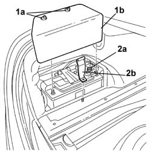
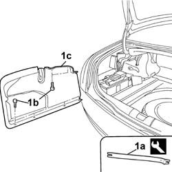

7040B12 Luggage compartment/load platform left SIDE LINING - R.R.
- Path
- Procedures > 70 FITTINGS > 7040 BODY INTERIOR UPHOLSTERY AND TRIM > 7040B LUGGAGE COMPARTMENT AND LOAD PLATFORM TRIMS > 7040B12 Luggage compartment/load platform left SIDE LINING - R.R.
- Kind
- repair procedure (removal / refitting; the operation number is the code)
- Applies to
- all engines; all production periods
- Interactive page
- https://sloeber94.github.io/elrnDB-lThss/en/#/113542
Applies to: all engines; all production periods
 Removing
Removing
 Refitting
RefittingSee in Op. 7040B10 LOAD CARRYING COMPARTMENT LINING - R.R.
1. Open the springs (1a) and remove the battery trim (1b).
2. Undo the nut (2a) and remove the battery retaining bracket (2b).

Applies to: all engines; all production periods
- Gently release the rear trim.
1. Release the retaining buttons (1b) using the tool (1a) and remove the side trim (1c).
 | Description | Code | Function |
|---|---|---|---|
1a | Knife | 1.878.077.000 | Removing luggage compartment left side lining |

Applies to: all engines; all production periods
Refitting
Removing- Place the side trim in position and secure it using the retaining buttons.
- Reposition the rear trim.
- Fit the battery retaining bracket and tighten the fixing nut to torque.
 | Value - daNm | Fastening | Component | Ø |
|---|---|---|---|---|
. | 1.5 | Nut | BATTERY RETAINING BRACKET | M6 |
- Connect the negative battery terminal.
- Fit the battery trim and close the retaining springs.
Topics linked from this page (1)
Topics that link to this page (10)
- 5505A48 CONTROL UNIT (digital network) in luggage compartment - R.R.
- 5505B51 Boot lid built in wiring - R.R.
- 5505C41 PASSENGER COMPARTMENT built in WIRING - R.R.
- 5540A60 Left outside rear light cluster - R.R.
- 7025B10 Boot lid - Realignment
- 7025B26 Boot LID LIFTING DEVICE (one), left or right - R.R.
- 7025B58 Boot lid LOCK striker - R.R.
- 7040B20 Luggage compartment/load platform lining - R.R.
- 7210E54 BOOT LID - R.R.
- 7210E66 REAR BUMPER - R.R.